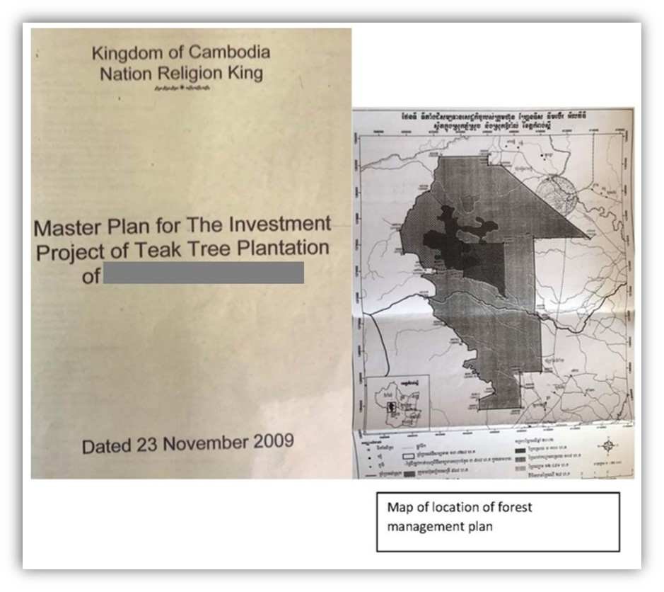
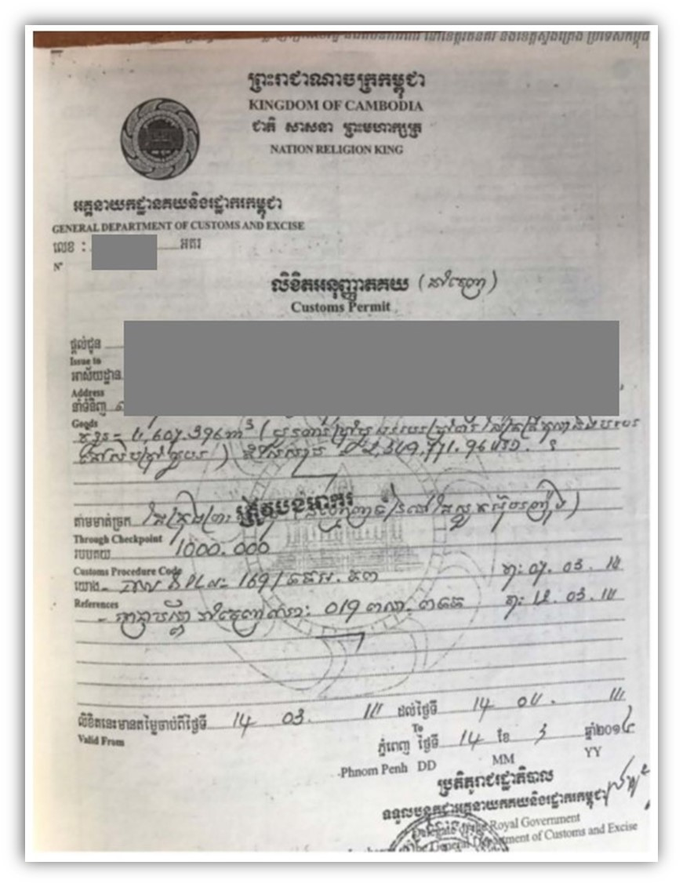

Implementing Timber Leglity Assurance Systems
A guide to comply with timber legality requirements in Cameroon and to support due diligence

CAMBODIA

Cambodia’s Timber legality requirements
Timber Legality Assurance Systems are being developed in a number of countries. They ensure that wood products conform to national laws and help to prevent the illegal importation of timber into other countries. The systems are dependent on governments developing effective control and verification systems and operators complying with legal requirements and conducting due diligence – in this context identifying and minimizing the risks associated with imported timber. By being aware of legal requirements in Cambodia and the risks of legal non-compliance, highlighted below, law enforcement agencies and importers can implement control and mitigation measures to prevent timber being illegally harvested, transported and traded. Importers and verification agencies may refer to or use this definition in implementing due diligence.
Suggestions for developing and implementing due diligence for importers
Due diligence and complexity

Developing due diligence systems
Implementing due diligence
The following documents are selected in accordance with Cambodia’s legal definition and/or legal requirements in different stages of the supply chain.
Contract on the investment in plantation forest

Contract on the investment in plantation forest applies to the Prakas-based Economic Land Concession of the Ministry of Agriculture, Forestry and Fisheries. The contract shows the concession owner, delineates the ELC boundaries, and the duration of the concession lease agreement (up to 50 years).
Master plan of investment project on plantation
The master plan on investment in plantation forest was signed by the Minister of Agriculture, Forestry and Fisheries and given to the Economic Land Concession (ELC) owner.
Harvesting permit
Private companies conduct harvesting activities on privately owned state-owned land for private management. These include economic land concessions (ELCs), social land concessions (SLCs) and other concessions. Check the licensor's signature and seal; on-site verification, assessment of licensing allocation process through interviews with government agencies at central and local levels.
Log Book A
Log book A issued by the Department of Forestry, including the volume of timber to pay taxes/fees. Check the duration, location and area of harvesting; visits to the licensing area, review documents, interview stakeholders and employees working for the permit holder.
Environmental and Social Impact Assessment Report
Environmental and social impact assessment report signed and approved by the Government, Ministry of Environment and Ministry of Agriculture, Forestry and Fisheries. Check signature, seal of approval agencies, name of project owner.
Payment receipt
Check information of the Payment Receipt matches the name of the timber owner, timber species, volume and location of harvesting.
Other papers
Authenticated documents issued by the Department of Forestry (for domestic transportation); issued by the Ministry of Economy and Finance (for export timber, if any)
Transport Permits PC-1
Transport Permits PC-1 (Permit de Condure-1) is applied to transport logs from a warehouse/stockpile to a defined processing factory. PC-1 signed by the Head of Forestry Administration Cantonment, valid for only 1 province. Check the validity of the permit, the volume of logs, the destination on the permit corresponding to the shipping route.
Transport Permits PC-2
Transport Permit PC-2 (Permit de Condure-2) is applied to transport wood products from the factory site to the domestic market. PC-2 is issued to organizations and transport enterprises, signed by the Director of the Department of Agriculture, Forestry and Fisheries. Check the validity of the permit, the volume of wood products, the destination on the permit corresponding to the shipping route.
Customs Permit
A Customs Permit is issued to a timber exporter, signed by the Director General of the General Department of Customs and Excise. Check the volume/quantity, the timber species matches the customs permit, the validity of the customs permit.
Export Permit (PC-IMEX)
PC/B Permit (also known as PC-IMEX): a transport permit permitting the export of timber and non-timber forest products jointly signed by the Minister of Trade and the Director of the Forestry Administration (sub-Decree No. 131 , the Article 7). Check the validity of the permit, the volume of wood products, the destination on the permit in accordance with the shipping route.
CITES export permit
The CITES export permit is issued by the General Department of Forestry. Take care to avoid buying CITES listed species, assure harvesting is at permitted levels, at levels that are sustainable relative to national inventories, gather CITES permits for native species and authentic license with the authorities.
Timber processing registration certificate
A timber processing registration certificate is a Directive (Prakas) signed by the Minister of Agriculture, Forestry and Fisheries that allows a woodworking company to operate and is renewable annually. Check the effective date, company name, type of processing, signed by the Minister of MAFF, volume/quantity of timber used for processing match the volume of PC-1 transport permit (timber from forest to processing facility), and a PC-2 transport permit prior to shipment of the lumber.
Certificate of monitoring and approval of environmental impact assessment
Certificate of monitoring and approval of environmental impact assessment issued by the General Department of Environmental Impact Assessment and Monitoring, Ministry of Environment. Certificates are issued semesterly and annually.
Employment card
Employment cards issued by the Ministry of Labor and Vocational Training for foreigners (red cards) and Cambodian nationals (green cards).
Labor contract
Applies to all private employment contracts performed in the Kingdom of Cambodia, regardless of where it is signed and irrespective of the nationality and residence of the contracting parties, which may be entered into written or orally. Labor contracts include: Fixed Term Contract (FDC), Undefinited Term Contract (UDC) and Conversion from FDC to UDC.